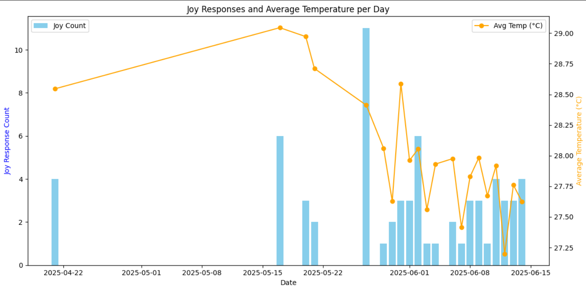

From mid-April 2025 - 15th of June 2025, I collected 200 responses to the question "How was your day?". This project's aim was to act as a public diary to promote self-reflection and mindfulness. As a side challenge to deepen my understanding of the data, I decided to ask participants about the region they responded from. This was to answer a personal hypothesis I have had: Does mood get affected by temperature? I have been asking this as recently the weather in the UK has gotten warmer. With this, I have increasingly gone on sunwalks to soak in the weather, which has increased my mood. I wanted to use this opportunity to analyze if the public feels the same way. I did this by analyzing participants' responses using Michellejieli's emotion_text_classifier to predict the responses' emotions. Afterward, I used Open Meteo's forecast API to gather historical weather data. With these datasets, I used matplotlib to plot this graph, which takes the total number of entries labeled with "joy" as the emotion and the mean daily weather. This is what it looked like:
